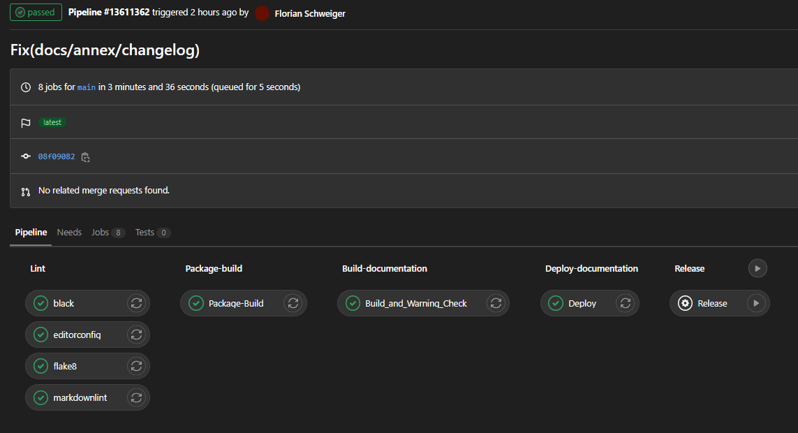

GitLab CI/CD
Contents
GitLab CI/CD#
The GitLab CI/CD can perform tasks defined in the .gitlab-ci.yml file. The general handling as well as certain tasks are explained in the following sections.
General Usage#
The most central component are stages. A stage defines normaly a certain task that should be performed. By adding a stage section like this:
stages:
- Test
- Lint
- Package-Build
- Documentation
- release
The developer defines the order of the specified tasks. Those stages also can have several subtasks, that all get executed at the same time. On the GitLab page this can look like:

To define a certain task one has to add a section like this in the gitlab-ci.yml file:
Deploy:
stage: Documentation
dependencies:
- Build_and_Warning_Check
script:
# move Sphinx documentation to public
- mv site public/
artifacts:
paths:
- public
expire_in: 1 day
only:
- main
tags:
- DOCKER
when: always
In there one can see several subsections like stage,script and so on, that define the behavior of the task (Further Informations):
stage: defines the position in the pipeline by add a keyword from the stage section explained abovescript: defines what commands should be executed to fulfill the task for this stageartifacts: Artifacts are files and folders that should exist in the pipeline and shared by the different stagesdependencies: A dependency defines required stages to execute this stageonly: With this one can restrict on which branches this pipeline gets executewhen: Defines what happens if a previous stage has failed.
In the script section one can also use the whole bash logic, since this runs normaly on a linux image. Sometimes it can be nessesary to use a different image with by using the image keyword. What images are available is not fully understood yet. We used this keyword once in the following stage:
markdownlint:
stage: Lint
image: node:dubnium-alpine
script:
- npm install -g markdownlint-cli@0.26.0
- node --version
- markdownlint --version
- markdownlint --config .markdownlint.jsonc -i venv . #-i LICENSE.md -i README.md -i CONTRIBUTING.md -i ./docs/annex -i AdaptionGuide.md .
tags:
- DOCKER
when: always
Documentation Build and Warning Check for Sphinx#
To check if the Sphinx documentation build in the CI/CD and destroy pipline on purpose the following stage has been developed using bash:
Build_and_Warning_Check:
stage: Build-Documentation
script:
# prepare virtual environment
- pip install virtualenv
- virtualenv venv
- source venv/bin/activate
# Check if the documentation has shown any warnings
- pip --proxy="$CODE_PROXY" install -r requirements.txt
- sphinx-build -b html ./docs site 2>&1 | tee stderr.txt
- echo "Error-Count = $(grep -o -i "ERROR" stderr.txt | wc -l)"
- if [ "$(grep -o -i "ERROR" stderr.txt | wc -l)" -gt "0" ]; then echo "To much Erros";exit 1; fi
- echo "Warning-Count = $(grep -o -i "WARNING" stderr.txt | wc -l)"
- if [ "$(grep -o -i "WARNING" stderr.txt | wc -l)" -gt "0" ]; then echo "To much Warnings"; exit 1; fi
artifacts:
paths:
- site/
expire_in: 1 day
tags:
- DOCKER
when: always
Thereby the intetion is to somehow make the deployment stage dependent on the Build_and_Warning_Check stage. This ensures that only Warning clean documentation is deployed. Sadly, this dependency could not yet been realized.
Deploy of Documentation#
To publish a documentation on code.siemens the GitLab CI/CD has to move some static site html documentation in the public folder. Usually one has a build stage for the documentation, that creates the documentation in the folder site and a Deploy stage that moves those generated files into the public folder.
Example:
Deploy:
stage: Deploy-Documentation
dependencies:
- Build_and_Warning_Check
script:
# move Sphinx documentation to public
- mv site public/
artifacts:
paths:
- public
expire_in: 1 day
only:
- main
tags:
- DOCKER
when: always
Linter stage#
This stage helps to improve the quality of your Markdown and Python files. A linter in the CI/CD pipeline is meant to check if the repository files are on the intendet standard. So for black this could mean to check if one has locally run the git-hook for black, for all the files. The stage consists of several substages that fullfill several tasks:
black: Is a package for autoformating Python code. Normally executed locally, since the CI/CD can not change repository files.
flake8: Checks the .py files for PEP8 standard
markdownlint: Gives recomendations on how formating .md files
editorconfig: Checks if the formating is consitant with the .editorconfig file
Its recomended to use this stage in combination with a corresponding [git-hook configuration]. This helps the user a lot since one gets feedback before pushing. One cant even commit things that are not compatible with the GitLab Pipeline. Also tools like black or Markdownlint-cli can automatically correct certain errors.
black:
stage: Lint
script:
# prepare virtual environment
- pip install virtualenv
- virtualenv venv
- source venv/bin/activate
- pip --proxy="$CODE_PROXY" install -r requirements.txt
# start black
- black python_package_name --check --verbose --diff --color
when: always
flake8:
stage: Lint
script:
# prepare virtual environment
- pip install virtualenv
- virtualenv venv
- source venv/bin/activate
- pip --proxy="$CODE_PROXY" install -r requirements.txt
# start flake8
- flake8
when: always
markdownlint:
stage: Lint
image: node:dubnium-alpine
script:
- npm install -g markdownlint-cli@0.26.0
- node --version
- markdownlint --version
- markdownlint -i venv -i LICENSE.md -i README.md -i CONTRIBUTING.md -i ./docs/annex -i AdaptionGuide.md .
tags:
- DOCKER
when: always
editorconfig:
stage: Lint
image: node:dubnium-alpine
script:
- npm install -g eclint@2.8.1
- node --version
- eclint --version
- eclint check docs/*/*.md docs/*.md *.md
tags:
- DOCKER
when: always
Test Stage#
Here Python code can be tested with pytest. Of course the developer has to deliver the corrsponding test files in the tests folder.
pytest:
stage: Test
script:
# prepare virtual environment
- pip install virtualenv
- virtualenv venv
- source venv/bin/activate
- pip --proxy="$CODE_PROXY" install -r requirements.txt
# start test
- pytest
Package build#
The Package-Build-stage builds the Python package and prepares everything for the release stage. In order to work properly the developer has to define the setup.py file properly.
Package-Build:
stage: Package-Build
script:
# prepare virtual environment
- pip install virtualenv
- virtualenv venv
- source venv/bin/activate
# build Python souce distribution and wheel
- python setup.py sdist bdist_wheel
artifacts:
paths:
- dist/*.whl
- dist/*.tar.gz
expire_in: 1 day
tags:
- DOCKER
when: always
Release stage#
To publish your package one generates a release. In the CI/CD world this is done with the release stage. Usually this stage is manually triggered since not for every push you want to generate a new release of your package (at least most of the time). Therefore, one sets the when: keyword to manual. Example:
Release:
stage: release
script:
# release PyPI package
- pip --proxy="$CODE_PROXY" install twine
- twine upload -u ${CI_REGISTRY_USER} -p ${CI_JOB_TOKEN} --repository-url ${REGISTRY_URL} dist/*
only:
- main
tags:
- DOCKER
when: manual